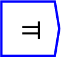
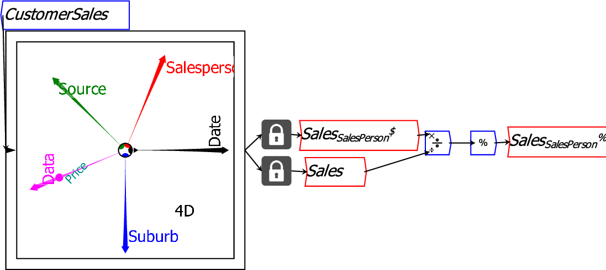
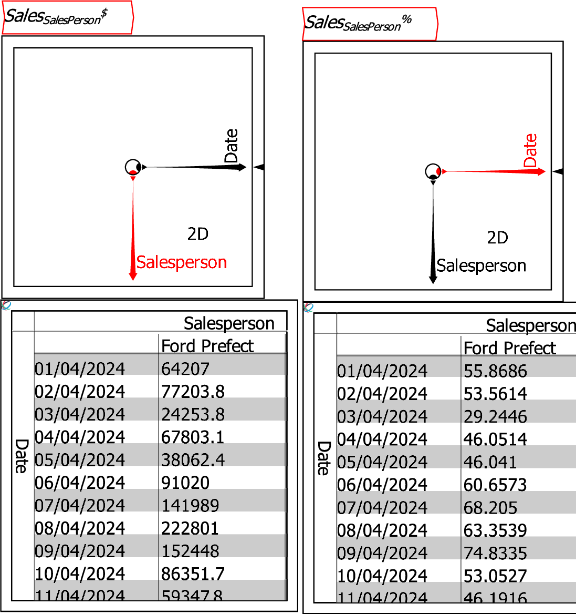
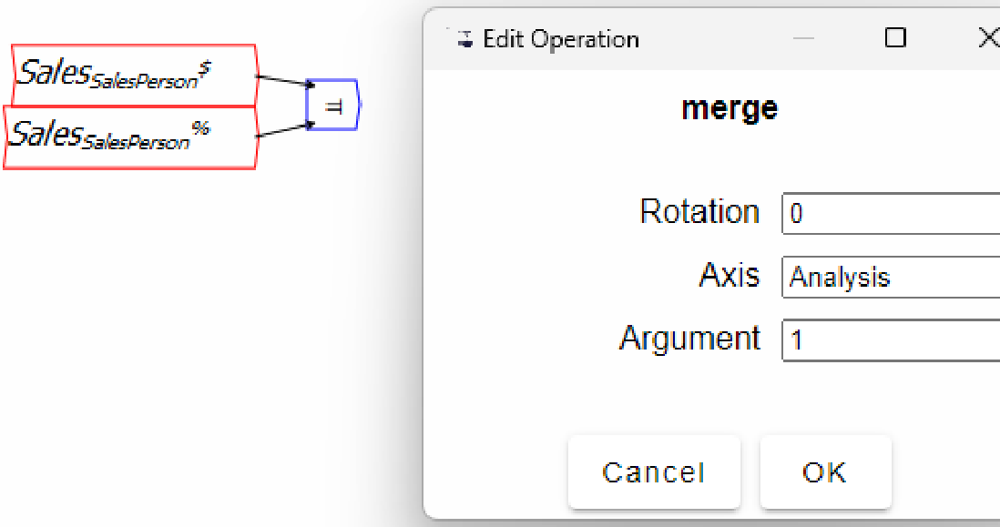
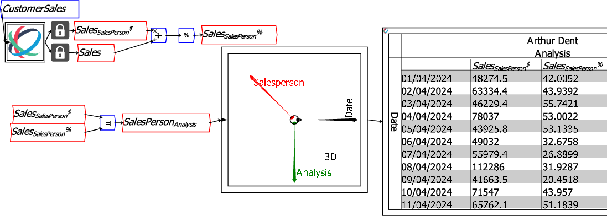

The operator can be placed on the canvas in two ways:
 ;
or
;
or
For example, the file below creates two 2-dimensional Ravels, one with sales in dollars and the other with sales by each salesperson as a percentage of total sales.

SalesSalesPerson$and SalesPerson%share the same dimensions (SalesPerson and Date), and they can be separately displayed as in the next figure.

Using the Merge operator, you can create one new Ravel containing information from both the $ sales and the % of total sales analysis:

The merged Ravel has 3 dimensions, with the extra dimension Analysis now containing the Sales by dollar amount and Sales as a percentage of total sales as entries on the Analysis axis.
